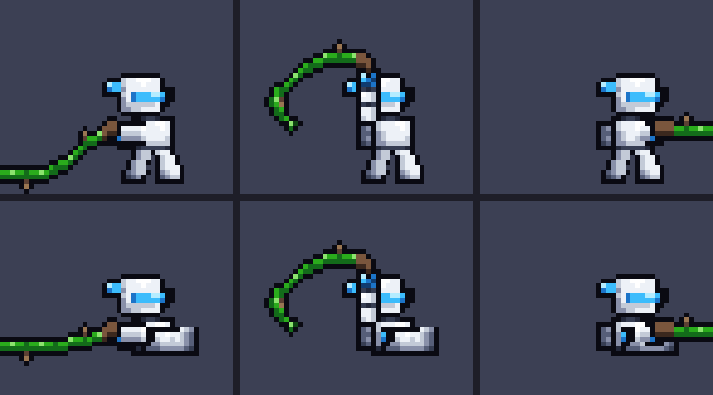
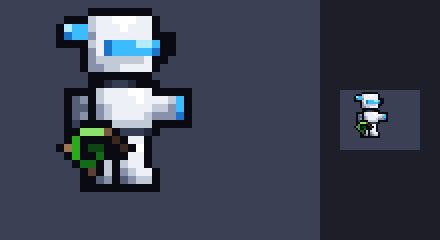
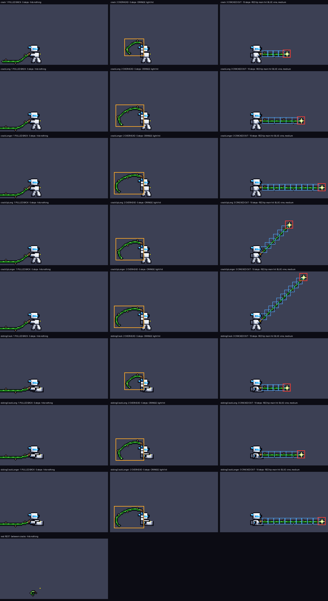

Up close: pulled back · swung overhead · cracked out, standing (top) and in a slide (bottom). He keeps his own twelve colours; the vine is Thorn Man green with brown thorns and a white glint on the tip.


Equipped but not in use: coiled at his hip, drawn pixel by pixel by the owner (23 Oct 2026). Up close, and at true size on the right.
EVERY HIT AREA, EVERY FRAME. Rows top to bottom: crack, crackLong, crackLonger, crackUpLong, crackUpLonger, slidingCrack, slidingCrackLong, slidingCrackLonger, rest. Orange: the overhead swing, a light hit to anything inside it while the picture shows (5 steps). Red: the tip, the main hit, and the only part that catches. Blue: the rest of the vine, medium damage, worked out by the game as 8×8 squares spaced along the line from his hand to the tip. Pulled back and at rest hit nothing. One crack pays any target once. Yellow dot: his hand.
